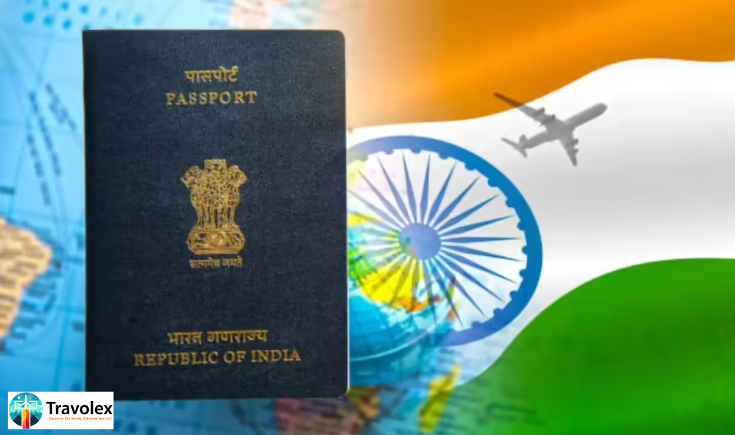

19 July
Travel has never been more accessible for Indian passport holders. In 2025, with global tourism rebounding and diplomatic ties strengthening, more countries are opening their borders to Indians with
visa on arrival (VoA)
ore-visa
options. This makes spontaneous trips, extended holidays, and budget getaways easier than ever.At Travolex, we’ve curated an up-to-date list of the top visa on arrival countries for Indian citizens in 2025—from exotic beach escapes to culturally rich adventures.
What is Visa on Arrival?
Visa on arrival (VoA) allows travelers to receive a visa at their destination airport or entry point without needing prior approval from a consulate or embassy. Typically, you'll need:
Top Visa on Arrival Countries for Indians in 2025
- Thailand A longtime favorite among Indian travelers, Thailand continues to offer a visa on arrival (VoA) for 15 days at major airports and land borders. With its pristine beaches in Phuket and Krabi, the buzzing energy of Bangkok, incredible street food, and affordable shopping and nightlife, Thailand remains an irresistible destination.
- Maldives The Maldives grants a 30-day visa on arrival to all nationalities, including Indians, making it an easy escape for both luxury and budget travelers. Perfect for honeymooners and couples, the Maldives offers spectacular scuba diving, snorkeling, overwater villas, and stunning beach resorts.
- Nepal Indian citizens do not require a visa to enter Nepal, only a valid government-issued ID such as a voter ID or passport. From trekking adventures to Everest Base Camp and Annapurna, to visiting temples and stupas in Kathmandu, and enjoying adventure sports in Pokhara—Nepal is ideal for nature and culture lovers. Why 2025? Eco-tourism and spiritual travel are on the rise, with new treks and luxury lodges being introduced across the country.
- Sri Lanka As of 2025, Indian citizens can obtain an e-visa or visa on arrival for short stays in Sri Lanka. The island nation offers a rich mix of history and nature, including ancient cities like Sigiriya and Polonnaruwa, lush tea plantations in Nuwara Eliya, and serene beaches with whale watching in Mirissa. Streamlined VoA processes at Bandaranaike International Airport and exclusive tourist deals for Indian visitors make travel even more convenient.
- Indonesia (Bali) Indonesia grants
- Jordan Jordan offers visa on arrival to Indian travelers who purchase a Jordan Pass in advance. This pass includes the visa fee and grants access to major attractions like Petra and other historical sites. Explore the ancient city of Petra, float in the Dead Sea, and take a desert safari in Wadi Rum.
- Tanzania For wildlife and adventure seekers, Tanzania offers visa on arrival for up to 30 days to Indian citizens. Home to iconic safaris in the Serengeti and Ngorongoro Crater, challenging Mount Kilimanjaro treks, and idyllic Zanzibar beaches, Tanzania has something for everyone.
visa on arrival for Indian passport holders
, valid for 30 days at major entry points such as Bali and Jakarta. Whether you're enjoying beach parties in Bali, seeking spiritual experiences in Ubud, or going on volcano treks and underwater adventures, Indonesia has it all.What You Need for Visa on Arrival
TWhile each country has its own rules, generally you should carry:
Final Thoughts
2025 brings a world of opportunity for Indian travelers who want to explore new horizons without the hassle of lengthy visa procedures. Whether you're craving a tropical escape, cultural immersion, or outdoor adventure, these
visa on arrival destinations
are perfect for spontaneous, stress-free trips.At Travolex, we help simplify your journey—from